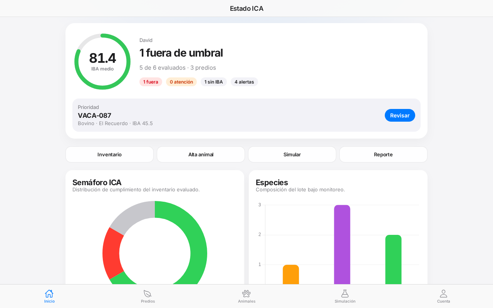
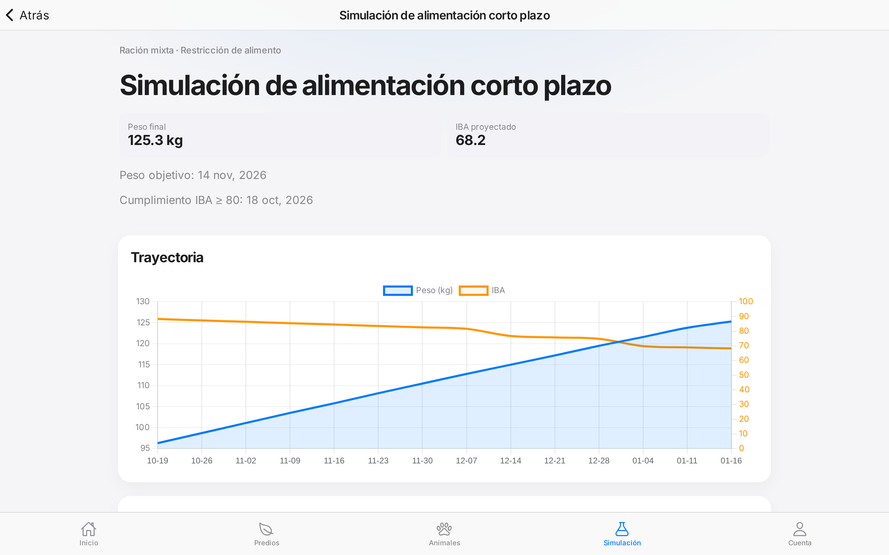

¿Qué pasa si cambio la dieta mañana… sin tocar todavía al animal?
Plataforma para monitorear el bienestar de bovinos y caprinos según lineamientos del ICA, y simular el efecto de dieta o clima sobre peso e índice de bienestar antes de intervenir el lote.
Caso del inventario
VACA-087 · El Recuerdo
El problema en campo
El bienestar ICA se documenta tarde: planillas, visitas puntuales y decisiones que se validan cuando el daño ya ocurrió.
Qué ve el productor o el veterinario



Índice IBA
Cinco libertades en un solo número. Ejemplo del caso VACA-087:
THI
Estrés calórico por temperatura y humedad. En VACA-087 el THI llega a 85,7.
THI = (1,8·T + 32) − [(0,55 − 0,0055·HR)·(1,8·T − 26)]
Umbrales distintos para rumiante y porcino: no se trata igual a todas las especies.
Simulación
Antes de cambiar dieta o manejo, se proyecta el lote día a día.
Un snapshot por día, determinista: misma semilla, mismo resultado. Sirve para decidir, no para adivinar.
Resultado observado
En el inventario de evaluación: tres predios, seis animales y un ejemplar fuera de umbral que concentra la prioridad.
Aporte
- Une monitoreo ICA con proyección antes de intervenir.
- Índice interpretable: se puede explicar al productor y al jurado.
- Sirve a productor, veterinario y administrador en el mismo flujo.
- Cubre bovino, caprino y porcino con reglas por especie.
 Probar el prototipo
animal-welfare-platform-vepq.vercel.app
Probar el prototipo
animal-welfare-platform-vepq.vercel.app